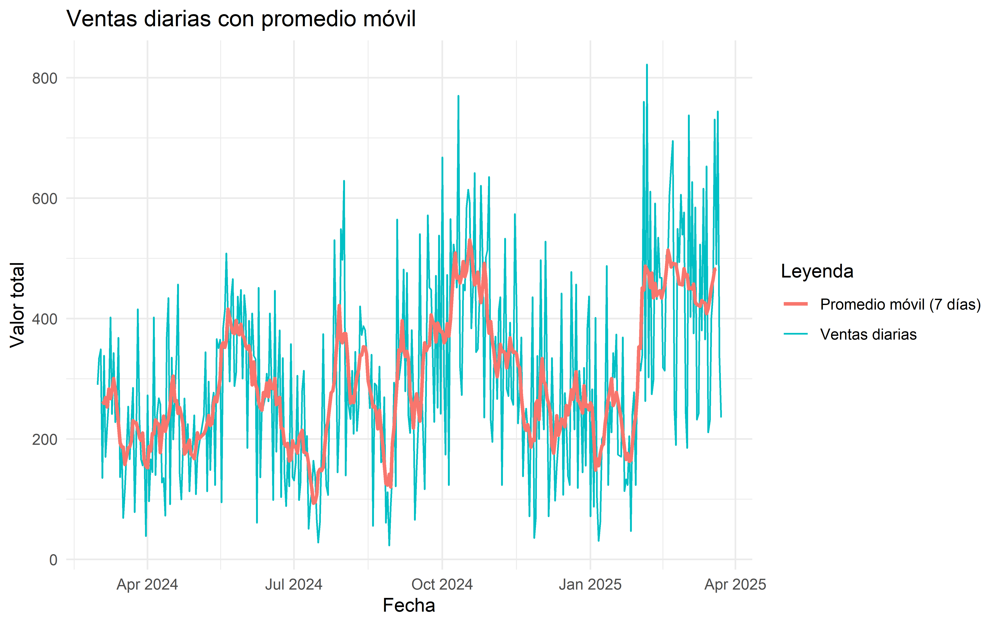
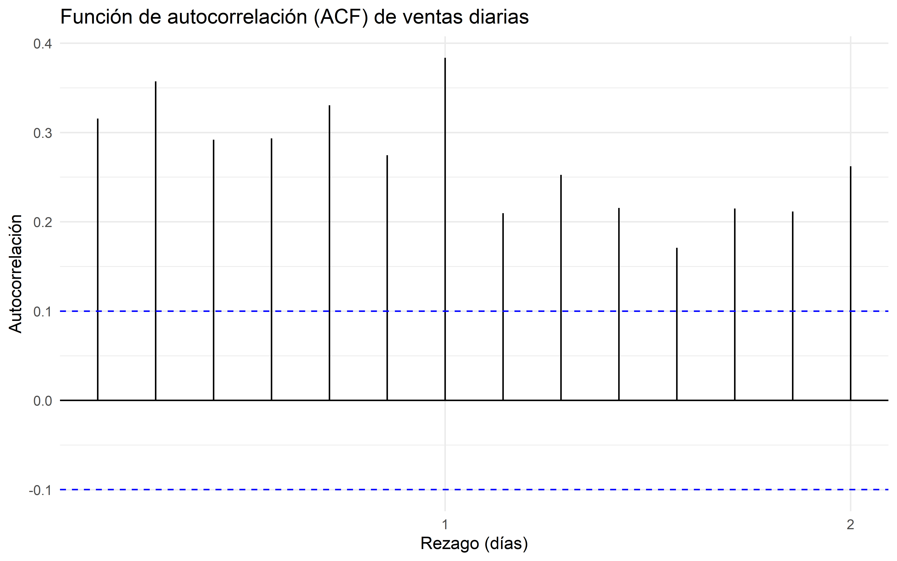
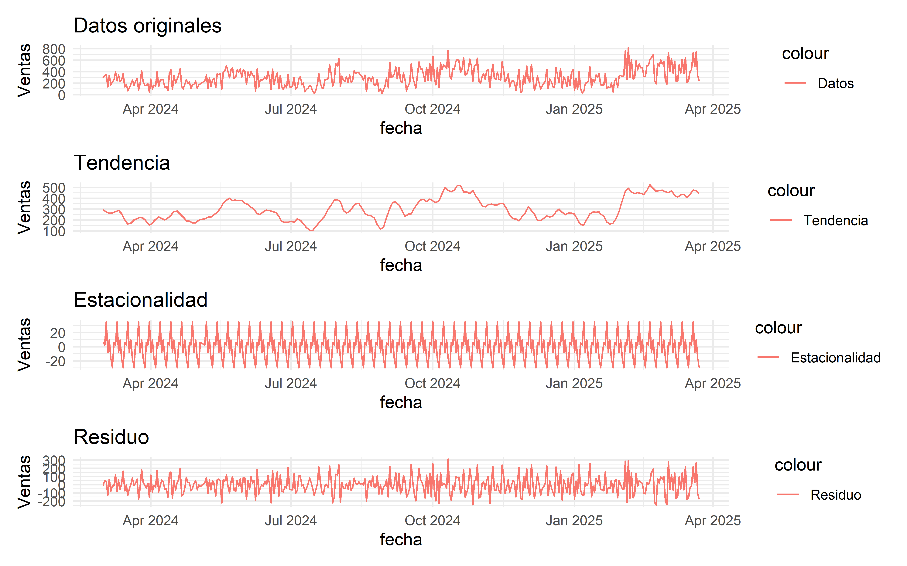

Capítulo 3 Metodología
3.1 Datos
Los datos abarcan un periodo de 385 días, desde abril 01 de 2024 hasta abril 23 de 2025. La variable analizada, valor_total, representa la suma de las ventas diarias (en dolares).
3.2 Promedio móvil
Promedio móvil: Se calculó un promedio móvil de 7 días para suavizar las fluctuaciones diarias y destacar tendencias generales en las ventas.
## Warning: Using `size` aesthetic for lines was deprecated in ggplot2 3.4.0.
## ℹ Please use `linewidth` instead.
## This warning is displayed once every 8 hours.
## Call `lifecycle::last_lifecycle_warnings()` to see where this warning was
## generated.## Warning: Removed 6 rows containing missing values or values outside the scale range
## (`geom_line()`).

Figure 3.1: Ventas diarias con promedio móvil
# Función para calcular rezagos
calcular_rezagos <- function(serie, lag_max = 14) {
acf(serie, lag.max = lag_max, plot = FALSE)
}
# Calcular autocorrelación
acf_ventas <- calcular_rezagos(ts_ventas)
autoplot(acf_ventas) +
labs(title = "Función de autocorrelación (ACF) de ventas diarias",
x = "Rezago (días)", y = "Autocorrelación") +
theme_minimal()

Figure 3.2: Autocorrelación de ventas
## Time Series:
## Start = c(1, 1)
## End = c(55, 7)
## Frequency = 7
## [1] 290.00 334.40 349.10 135.20 338.50 170.20 220.10 265.50 402.00 241.40
## [11] 342.80 228.10 256.20 368.20 136.50 183.20 68.90 115.60 179.90 253.90
## [21] 166.50 228.10 285.10 78.70 184.90 415.40 231.70 165.40 156.10 189.90
## [31] 38.70 272.80 96.50 166.50 145.00 402.10 140.10 241.50 267.70 258.60
## [41] 127.70 135.20 72.50 370.00 434.30 91.60 335.30 199.20 275.30 338.50
## [51] 456.58 142.36 99.74 184.98 267.46 192.02 224.84 113.16 169.00 182.22
## [61] 239.54 108.26 170.28 189.88 239.14 344.08 113.16 295.38 148.44 255.52
## [71] 277.26 123.64 365.92 350.82 365.06 94.74 385.52 414.22 508.08 403.56
## [81] 295.38 437.94 465.66 287.74 310.08 436.46 391.70 447.54 300.28 439.22
## [91] 408.54 184.98 396.50 307.54 408.54 338.00 333.10 60.74 451.16 136.18
## [101] 259.14 254.24 267.46 308.60 262.56 408.54 290.48 98.46 446.26 178.80
## [111] 300.28 380.62 103.36 334.58 141.08 88.66 169.00 121.48 357.60 136.18
## [121] 131.28 159.20 305.18 98.46 126.38 280.68 313.50 172.42 205.24 50.94
## [131] 93.56 111.68 164.10 139.60 65.64 27.92 60.74 180.74 374.24 200.34
## [141] 121.48 106.78 261.08 269.40 279.20 530.48 367.86 144.50 233.16 548.60
## [151] 497.66 628.94 139.60 325.24 252.76 233.16 313.50 208.66 344.84 213.56
## [161] 256.18 420.28 372.76 387.46 381.08 344.84 310.54 251.28 339.94 55.84
## [171] 292.42 289.00 233.16 320.34 161.14 167.52 269.40 60.74 111.68 23.02
## [181] 88.66 143.02 293.90 121.48 564.78 298.80 321.82 353.16 481.48 279.20
## [191] 476.12 238.06 210.14 381.08 265.98 65.64 147.92 219.94 540.28 303.70
## [201] 213.56 116.58 321.82 571.62 451.62 448.20 349.74 228.26 471.22 251.78
## [211] 537.86 241.98 667.66 302.24 173.90 472.70 123.44 565.28 435.48 523.16
## [221] 498.66 451.64 770.04 318.40 272.84 456.54 446.74 584.88 614.28 593.22
## [231] 383.56 450.18 641.70 344.36 349.26 430.58 620.64 503.56 235.62 502.10
## [241] 513.36 635.34 230.72 194.96 318.40 370.32 266.48 414.42 435.48 123.44
## [251] 359.06 532.96 282.64 271.38 393.36 266.48 256.68 573.62 420.78 225.82
## [261] 276.28 368.86 138.14 225.82 250.32 211.12 71.52 235.62 435.48 35.76
## [271] 66.62 338.00 199.86 497.20 272.84 216.02 528.06 282.64 71.52 164.10
## [281] 334.56 216.02 97.48 154.30 196.42 230.72 441.84 107.28 276.28 225.82
## [291] 138.14 123.44 477.60 333.10 216.02 456.54 118.54 313.50 266.48 144.50
## [301] 318.40 155.76 385.02 436.94 71.52 282.64 87.68 401.18 102.38 30.86
## [311] 61.72 199.86 206.22 230.72 487.40 123.44 261.58 211.12 342.90 302.24
## [321] 373.76 173.90 170.46 368.86 113.64 133.24 123.44 204.76 47.02 241.98
## [331] 277.74 123.44 324.76 333.10 313.50 338.00 760.24 263.04 821.96 302.24
## [341] 610.84 274.30 297.34 591.24 432.04 534.42 467.80 467.80 318.40 313.50
## [351] 505.02 505.02 605.94 652.96 695.08 246.88 190.06 549.12 493.76 605.94
## [361] 539.32 576.54 241.98 185.16 737.72 402.64 627.00 375.22 584.88 232.18
## [371] 241.98 523.16 380.12 615.74 365.42 652.96 211.12 230.72 401.18 441.84
## [381] 730.84 490.32 744.08 334.56 235.62## [1] 385# Aplica STL
descomposicion <- stl(ts_ventas, s.window = "periodic")
# Grafica
autoplot(descomposicion) +
labs(title = "Descomposición de la serie temporal de ventas",
x = "Días transcurridos")Figure 3.3: Descomposición de la serie temporal
# Extraer los componentes de la descomposición STL
stl_components <- as.data.frame(descomposicion$time.series)
stl_components$fecha <- ventas_diarias$fecha
# Verificar que las fechas coincidan
head(stl_components$fecha)## [1] "2024-03-01" "2024-03-02" "2024-03-03" "2024-03-04" "2024-03-05"
## [6] "2024-03-06"## [1] "2025-03-18" "2025-03-19" "2025-03-20" "2025-03-21" "2025-03-22"
## [6] "2025-03-23"# Crear una gráfica personalizada con ggplot2
library(ggplot2)
# Gráfica de todos los componentes
p1 <- ggplot(stl_components, aes(x = fecha)) +
geom_line(aes(y = seasonal + trend + remainder, color = "Datos")) +
labs(title = "Datos originales", y = "Ventas") +
theme_minimal()
p2 <- ggplot(stl_components, aes(x = fecha)) +
geom_line(aes(y = trend, color = "Tendencia")) +
labs(title = "Tendencia", y = "Ventas") +
theme_minimal()
p3 <- ggplot(stl_components, aes(x = fecha)) +
geom_line(aes(y = seasonal, color = "Estacionalidad")) +
labs(title = "Estacionalidad", y = "Ventas") +
theme_minimal()
p4 <- ggplot(stl_components, aes(x = fecha)) +
geom_line(aes(y = remainder, color = "Residuo")) +
labs(title = "Residuo", y = "Ventas") +
theme_minimal()
# Combinar gráficos
library(patchwork)
p1 / p2 / p3 / p4